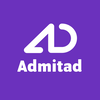
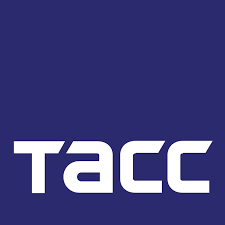
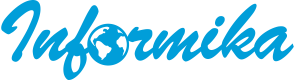
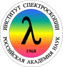

About
Software engineer, curious mind, husband, father, and just a nice guy.
I'm Russian currently living and working in Luxembourg. I'm actively looking for relocation opportunities, which could require visa sponsorship. Upon refining the CV once again, I hope that you would not find it inappropriate. The goal is to tell you more about me as a person and eliminate the usual fluff.
Hard skills
Programming was always a field of interest for me. Even though I studied physics, we had an intense programming course in C++ and Delphi. However, the tasks we used to have back then was far from the real-life tasks.
My professional career as a software engineer started in 2012, and the first language I have learned was PHP, as I found it a good fit for a start. Of course, it was a simple procedural code, and the tasks were relatively simple as well: database manipulation, form handling, etc. During the 8 last years, PHP became much more mature as a language. Meanwhile, I have also drastically improved my understanding of object-oriented programming, software architecture, and PHP internals.
Since then my knowledge increased in the wide variety of general concepts, e.g., data structures, algorithms, design patterns, defensive coding, and test automation. That's why learning next programming language took much less time. Development in Golang was a requirement for one of my former places of work. I have learned a lot about system programming, concurrency, profiling, and messaging. It was an excellent experience and I took a lot from that. There are some appropriate use-cases for the Golang services in my current daily work as well, so I still use it regularly.
Python was my another language of choice, I love the clarity and expressiveness of the language, but unfortunately, I never had a chance to use it professionally. I used it in some of my pet projects or when I code just for fun.
At the moment, I feel that I have more interest in the part of the development, which usually referred as SRE: containerization, container orchestration, system reliability, fault-tolerant architecture decisions, auto-scaling techniques, CI/CD pipelines, developer tools and so on.
As a backend software engineer, I found that the most challenging decisions are related to application architecture. When the systems being built increase in size and load becomes more substantial, stricter requirements appear to have a resilient, robust, and scalable architecture for an app to be successful on the market. That process produces so many interesting puzzles to solve. It is so exciting to be a software engineer at the present moment, and I'm so happy that my hobby became my profession.
Languages
PHP (Symfony, Yii2, Slim)
- 8 yearsGolang (Echo, go-micro)
- 3 yearsJavascript: NodeJS
Python
Databases
Relational: PostgreSQL, MySQL
Document-oriented: MongoDB
Search engines: Elasticsearch
Key-value: Redis, Memcached
DevOps
Containerization: Docker
Orchestration: Kubernetes
Message oriented middleware
RabbitMQ, NATS, mangos(nanomsg)
Cloud computing services
AWS
Microsoft Azure
Misc
Arch Linux, Z shell, PHPStorm, Atlassian Stack
Soft skills
Curiosity is my greatest strength, I am fond of making the unknown known, and I'm always excited to learn a new technology or programming language if needed.
As you probably already noticed, I prefer to be concise and informative in the way I present information. To tell the full story and not to waste anyone's time is a fragile balance that is challenging to find. It would be presumptuous to say that I possess that exact balance, but even an aspiration to it is a benefit.
I know the importance of the question "why?", I can explain my decisions clearly, and I respect the opinion of others. As the issues with multiple "right" solutions are not that rare, picking the way to go is not an easy task. That's why communication within the team is super important, and I am a team player.
Sharing knowledge is fun and rewarding as it opens the possibility of deepening your knowledge and learn something from others in return.
Last but not least, there is another form of communication, or it should be treated as such, in my opinion. The code that I am writing would be read by the software engineers that I may not even meet personally. The code itself needs to provide insights on the underlying logic. That is why I treat the code clarity and readability as an essential quality.
Experience
July 2018 - present
PHP developer
Docler Holding
It was an invaluable experience to work at the company hosting the largest live cam website in the world (Livejasmin, Alexa Top 28 rank). The website has 35-40 million user visits per day and more than 2000 live streams at any given moment. Such impressive numbers created a lot of fascinating development challenges.
I was lucky to get into the team responsible for the user side. It was interesting to develop new features and see the impact of them on the critical business metrics that we had. Most of the development was in PHP, but apart from that, I was in charge of creating the developer tools in Golang, which was mostly my initiative. Besides some minor ones there were an API client generator tool based on the specification and multiple system components needed for the error tracking integration. I have received a lot of positive feedback after the implementation from the developer colleagues.
I was a part of the one from more than 20 autonomous, independent, and flat organized development teams. The most important thing that I took from that is the importance of the people interaction, especially in the form of verbal communication during the development of such a huge product. That was the first company I've seen that has fully incorporated Agile methodologies and precisely followed the Scrum best practices.

June 2017 - July 2018
Senior backend developer (Golang)
Admitad GmbH
For a year, I was working in the Moscow office of Admitad GmbH, which is an affiliate network with a global scale. I took part in the development of a couple of projects there, which were isolated from the main product. Development there had a startup spirit. We were completely free in the technical choices and technologies that we have used.
They chose Golang in favor of PHP for example because of the requirement to reduce the latency as much as possible. I took this excellent opportunity to learn the language and to understand its specifics. Worth to mention that it took just a couple of weeks or me to write the first meaningful service on Golang and a couple of months to have full confidence in my actions because the background that I had helped me to master it quickly.
The most exciting project I had in Admitad was to build a real-time bidding platform. Real-time bidding means that an auction for the user view is held between the advertisers when the user visits the page. Advertisers choose the price based on the data that is collected about the user. Most certainly, the user would not wait for the banner to appear, so the auction is supposed to take no more than 200ms. Probably that was the most fun and challenging project I have created from scratch. That was the time I learned a lot about distributed system communication strategies, failure handling scenarios, and event-driven architecture. What deserves a special mention is awesome Golang ecosystem tools that were quite handy to ensure the best performance (profiling and tracing).
That was the place where I got familiar with Kubernetes as we were in charge of the infrastructure as well, I still have a great interest in that field. Containerisation helped us to build predictable, almost identical development environments, it solved a bunch of problems for us, but it had its price as the complexity increased drastically.

September 2016 - July 2017
Senior backend developer
TASS
TASS is a major news agency in Russia founded back in 1904. To keep up with the times, they did a lot to embrace a new digital era. That includes not only the website and web app development but also the creation of the set of internal services covering most of the business processes.
I was implementing one such internal system that was used for the sales and distribution of the news. It has a PHP and NodeJS parts with a single page application written using ReactJS. My responsibility was mostly the backend parts, which provided an API to the frontend and a WebSocket connection for real-time updates. That was the place I got familiar with the service-oriented and event-driven architecture: an article was going through the multiple stages of categorization and keyword detection using the neural network before being added to the feed and the search index. As far as I heard, agency partners were delighted with the results we have provided them.

September 2014 - September 2016
Full-stack developer
Informika
The time I worked in Informika gave me a lot in terms of professional growth. It is a government company curated by the Ministry of Education. Multiple projects were designed and implemented in the scope of the government program, to name a few: Russian electronic school(kind of Coursera for school), photo stock for Russian Geographical Society, etc.
I got familiar with scrum methodologies there. Back in the days, it has opened my eyes on the role of the processes in the project's success.
Most of the applications we made there were monoliths with external dependencies of PostgreSQL, RabbitMQ, Elasticsearch, etc. It was a simpler time, there were no requirements for a huge load, scale, or something, but I remember how much faster we could deliver a feature or investigate a bug.
Back then, I realized how much fun it could be to arrange team meetups to share the knowledge on the various tech topics.

March 2012 - September 2014
Leading Information Systems Engineer
Institute for Spectroscopy RAS
After the career change, I needed to start from scratch, to learn basic programming concepts, and to learn a language that fits well to the web application development. I studied programming on my own by reading books, articles, watching videos, but it only started to make sense after I tried the concepts I read about in real-life tasks. Luckily back then, I got an opportunity to get the position of a full-stack software engineer in ISAN. It is a research institute, but they have their own IT department. I gained the needed skills, and soon enough after I have joined, I started to do simple tasks like fixing their website, writing their intranet tools, etc.
Education
National Research Nuclear University MEPhI
Engineer-physicist, specialty "Chemical physics - Physics of kinetic phenomena."
2003-2009
Troitsk Institute for Innovation and Fusion Research (TRINITI)
Full-time postgraduate study
2009-2012
Despite I had a lot of satisfaction and enjoyment working as a scientist, there were significant factors of financial and bureaucratic nature, which are kind of typical for Russia. I did a career change, and I never regret it since then because I found even more excitement in writing software while keeping the scientific attitude and the desire to understand how everything works internally.
Language
English
C1
IELTS Overall Band Score 7.0 - Speaking 7.5 Listening 7.5 Reading 7.0 Writing 6.0 (2017)